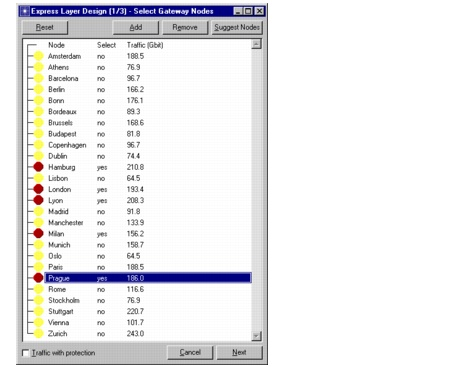
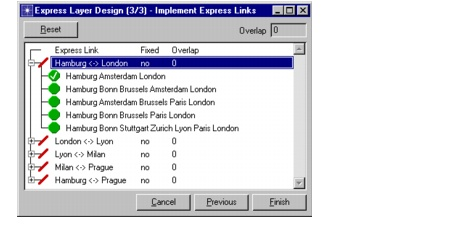
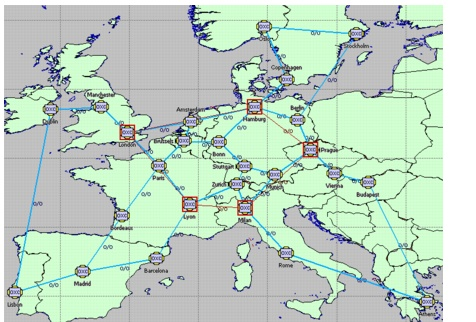
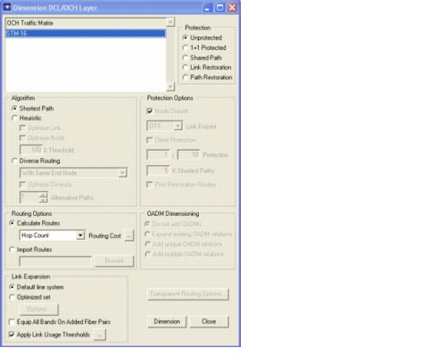
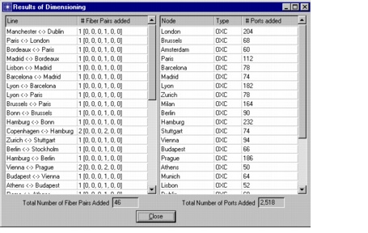
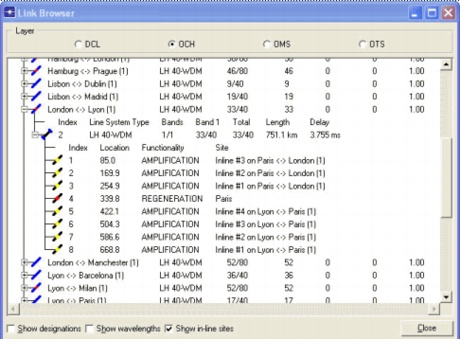
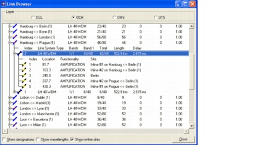
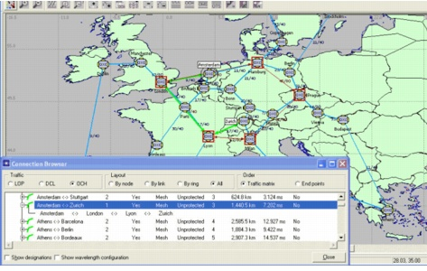
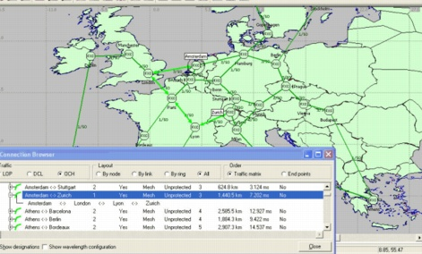

Express Layer Design
The goal of an optical express layer is to reduce the amount of switching equipment in the OCH nodes by providing express links between nodes that exchange a lot of traffic. To create an express layer, you use the Express Layer Design Wizard (Design > Express Layer Design).
The wizard guides you through the three main steps to construct an express layer:
Procedure 3-10 Using Express Layer Design
- Open the project.
- Select File > Open.
- Select the WDMGuru_Tutorial_Express_Layer_Design project, then press Open.
- Define an express layer.
- Select Design > Express Layer Design.
- Create gateway nodes (that is, nodes that are part of the optical express layer). Double-click on the node Hamburg in the Express Layer Design (1/3) – Select Gateway Nodes dialog box.
- Repeat the previous step for the nodes London, Lyon, Milan, and Prague.
- Press Next in the Express Layer Design (1/3) – Select Gateway Nodes dialog box.
- Create express links between the gateway nodes. In the workspace, select node Hamburg, press the Shift key and select node London.
- Press Add in the Express Layer Design (2/3) – Select Express Links dialog box.
- Create the following additional express links:
- Press Next in the Express Layer Design (2/3) – Select Express Links dialog box.
- Click on the + icon to see the candidate fiber routes for an express link. A fiber route can be selected by double-clicking on the route. By default, SP Guru Transport Planner chooses the routes so that the amount of overlap between the different fiber routes is minimal. In this example, there is no overlap between the selected routes.
- Press Finish to close the Express Layer Design (3/3) – Implement Express Links dialog box.
- Right-click in the workspace, then select OCH Express Layer.
- Dimension the OCH layer.
- Select Design > Dimension DCL/OCH Layer....
- Select the traffic matrix STM-16.
- Select the default setting for all options:
- Unmark Equip All Bands On Added Fiber Pairs.
- Press Dimension.
- Close the Results of Dimensioning and the Dimension DCL/OCH Layer dialog boxes.
- Inspect the links.
- Select Network > Link Browser.
- Select OCH as Layer and mark the Show in-line sites option.
- Select the express link Lyon<->London. (This link might appear as London<->Lyon in the treeview.)
- Use the + icon to view the line system installed on the link and its amplification and regeneration locations. The line-system type is LH 40-WDM. This express link has a total length of 751 km. This is longer than the maximum unregenerated distance (600 km), while its constituting links London<->Paris and Paris<->Lyon are shorter than 600 km. Therefore, there is no in-line regeneration needed on these constituting links, but the express link needs to be regenerated at the intermediate node Paris.
- Select the express link Prague<->Hamburg (or Hamburg<->Prague) on which 46 of the 80 wavelengths are in use. Two line systems of type LH 40-WDM have been installed on it.
- Click on the + icon. The total length of this express link is 523 km, implying no regeneration is needed on this link. The amplification span (the maximum distance without amplification) is 100 km. The distance between the last amplifier on the constituting link Hamburg<->Berlin and the next amplifier (first amplifier on the constituting link Prague<->Berlin) amounts to 175 km. Therefore, an amplifier is needed in the intermediate node Berlin.
- Close the link browser.
- Inspect the routed connections.
- Select Network > Connection Browser.
- Select OCH (Traffic), All (Layout), and Traffic Matrix (Order).
- Select the traffic matrix STM-16 and click on the + icon to view its connections.
- Select the connection Amsterdam<->Zurich.
- Use the OMS button on the toolbar to see the path of the connection in the OMS layer.
- Close the connection browser.
- Close the project
The example project loads with the scenario scenario1 in the workspace.
The Express Layer Design wizard appears. The wizard will guide you through the creation of an optical express layer.
This makes Hamburg a gateway node, marked by a red icon (in the dialog box and in the workspace).

An express link is created between Hamburg and London. This link now appears in the dialog box.

In the last step of the express layer design, the fiber routes for the express links are selected.

The optical express layer has now been defined.
The gateway nodes and the express links are marked in red.

In this example, the gateway nodes and the express links were selected manually. However, you can let SP Guru Transport Planner suggest the gateway nodes (based on traffic or cost measures) by selecting Suggest Nodes in the Express Layer Design (1/3) – Select Gateway Nodes dialog box. You can also let SP Guru Transport Planner suggest the express links by selecting Suggest Links in the Express Layer Design (2/3) – Select Express Links dialog box.

The Results of Dimensioning dialog box shows that 46 fiber pairs have been added to the network.

A blue and red icon indicates the express links.
The express links are responsible for carrying a large amount of traffic, because a lot of transit traffic is off-loaded toward the express links.
Thirty-three of the 40 available wavelengths are in use.


The path is highlighted on the workspace (in the OCH layer).
This connection is routed through the nodes Amsterdam, London, Lyon, and Zurich. It contributes to the OXC in these nodes. Note that it is routed along the express link between London and Lyon.

The connection is routed through the nodes Amsterdam, London, Paris, Lyon, and Zurich.
It is switched at the OMS layer in node Paris (part of the express link between London and Lyon), and at the OCH layer in the other nodes. Therefore, the connection does not contribute to the OXC in Paris. So, because of the express link between London and Lyon, traffic is bypassed at the fiber level in Paris, resulting in a smaller OXC in this node.

End of Procedure 3-10